Capacitación personalizada sin costo
Comunicación aumentativa para tu equipo
Una hora de capacitación personalizada con nuestros terapeutas, para los profesionales de la educación que trabajan con inclusión.
Qué vas a aprender
- Qué opciones de comunicación aumentativa existen hoy en el mercado y para qué sirve cada una.
- Cómo funciona TD Snap y cómo sacarle provecho en el trabajo diario.
- Cómo usar esta tecnología al educar a estudiantes no verbales.
Cómo la coordinamos
- Nos escribes y nos cuentas quiénes participarían de tu equipo.
- Acordamos el día y el horario que le acomode a tu establecimiento.
- Uno de nuestros terapeutas los capacita durante una hora y responde sus preguntas.
¿Por qué sin costo? Porque estamos realmente comprometidos con la inclusión. Durante este año, decenas de colegios ya se beneficiaron de estas capacitaciones, y queremos que muchos más estudiantes no verbales tengan cómo comunicarse. Es nuestro aporte. Así seguimos Construyendo Inclusión.
También puedes escribirme a rayen.ogalde@opencluster-tech.cl o llamarme al +56 9 5629 4723.
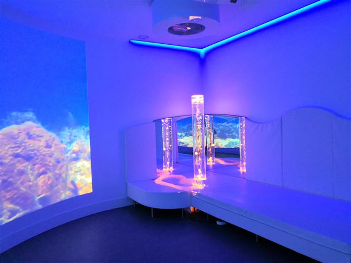
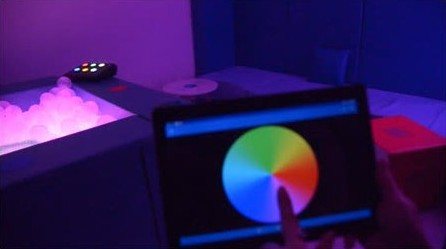
Salas multisensoriales
Estación sensorial móvil y salas multisensoriales para tu escuela
Diseñadas para cada espacio y para las necesidades de cada establecimiento.
Tres caminos según tu espacio


Opciones de salas y estaciones sensoriales que hemos diseñado para ti
Preparamos distintas alternativas para escuelas, según el espacio que tienen y las necesidades de sus estudiantes. Van desde una sala completa hasta una estación sensorial móvil que se lleva de una sala a otra.
Conoce las opcionesMateriales que cuidan la salud de tus estudiantes
Tus estudiantes tocan, abrazan y se recuestan sobre estos materiales todos los días. Por eso elegimos materiales con certificaciones internacionales.
El diseño de la sala no tiene costo. Nuestros profesionales evalúan las necesidades de tu comunidad y proponen el espacio adecuado. Así seguimos Construyendo Inclusión.
También puedes escribirme a rayen.ogalde@opencluster-tech.cl o llamarme al +56 9 5629 4723.
Algunas ayudas técnicas que tu establecimiento puede conseguir
Toca cada una para saber para quién es y cómo se usa en la escuela.
Comunicación
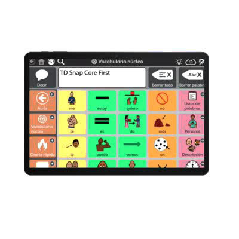
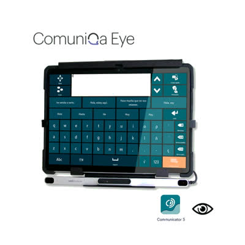
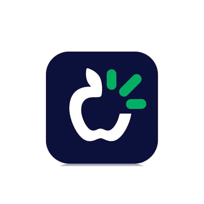
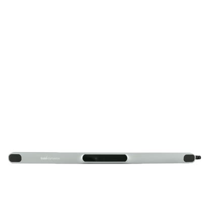
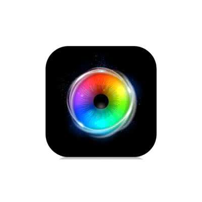
Uso del computador
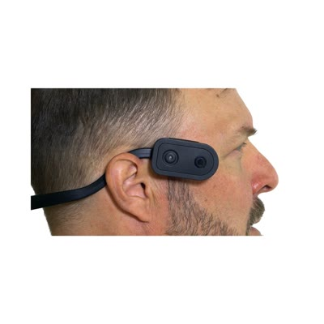
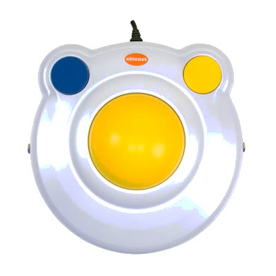
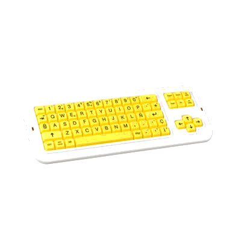
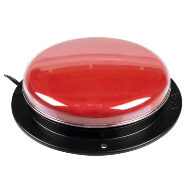
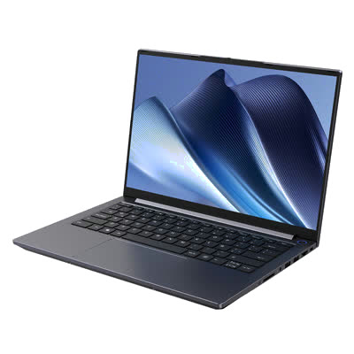
Para estudiantes ciegos o con baja visión
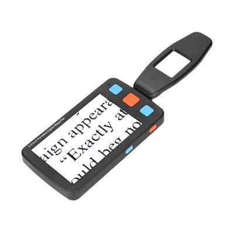
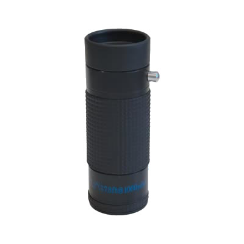
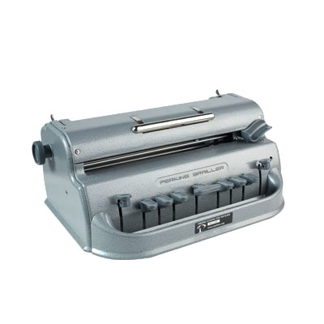
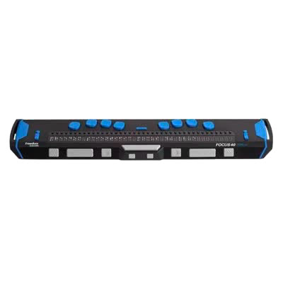
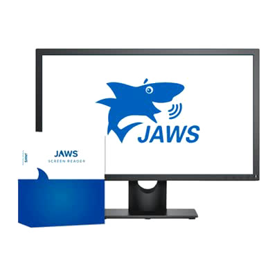
Más apoyos para el aula
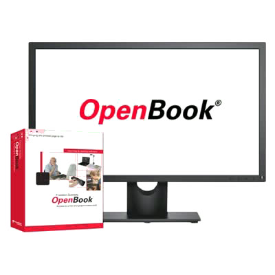
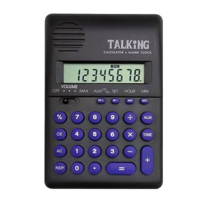
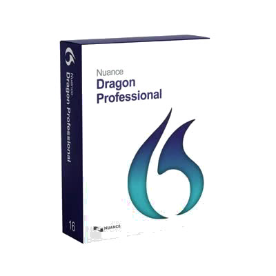
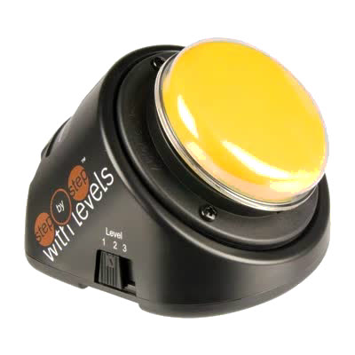
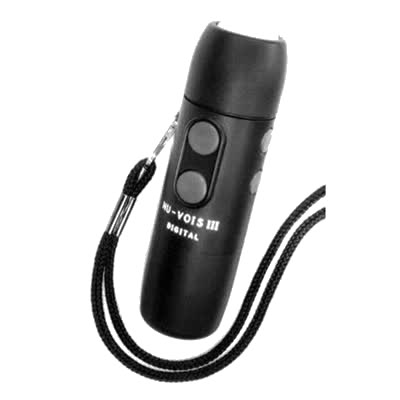
Asesoría y apoyo sin costo
Ayudas técnicas y salas con fondos del Gobierno
Colaboramos en la elaboración de proyectos en base a tus necesidades, para que postules a fondos gubernamentales y consigas en tu establecimiento las ayudas técnicas que necesitan tus estudiantes y salas multisensoriales completas.
Caminos para financiarlo
- Subvención Escolar Preferencial (SEP). Se incluye en el Plan de Mejoramiento Educativo (PME).
- Subvención del Programa de Integración (PIE) o FAEP, conversándolo con el sostenedor (DAEM, corporación o Servicio Local).
- Fondos concursables, como el FNDR de los gobiernos regionales.
- SENADIS, para ayudas técnicas.
Cómo lo hacemos contigo
- Te asesoramos sobre los fondos disponibles: cuáles puede usar tu establecimiento, cuál le conviene y cuándo postular.
- Elaboramos el proyecto. Nuestros profesionales definen la sala o las ayudas técnicas según tus estudiantes, y preparamos las especificaciones técnicas y la cotización.
- Postulamos contigo y te acompañamos hasta la instalación.
¿Por qué sin costo? Porque estamos realmente comprometidos con la inclusión. Poner a nuestros expertos a tu disposición para elaborar el proyecto es nuestro aporte. Así seguimos Construyendo Inclusión.
También puedes escribirme a rayen.ogalde@opencluster-tech.cl o llamarme al +56 9 5629 4723.